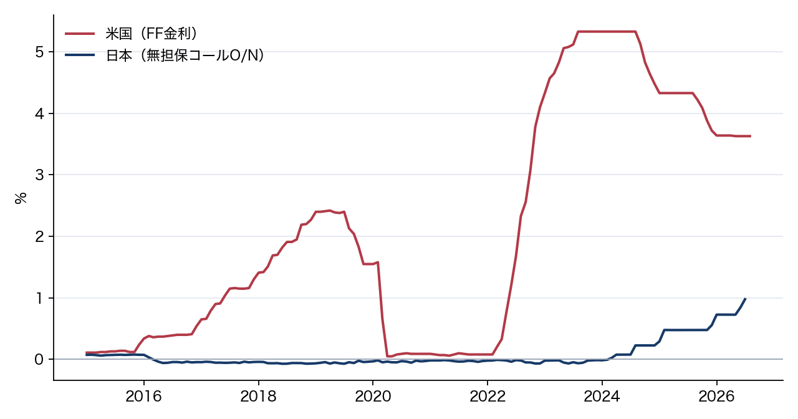

Markdownの記法サンプル
2026年10月15日
2015年から2026年までの日米の短期市場金利を並べると、動き方がまったく違います。米国は2022年から急に上げて2023年に5.33%まで行き、そこから下げました。日本は8年間マイナス圏にとどまり、2024年3月にプラスに戻ってから、ゆっくり1%近くまで上がりました。
この文書は第5回の資料で出てくる記法を一通り使ったサンプルです。中身よりも、記号がどう書かれているかを見てください。report.md
をVS Codeで開いて、プレビュー（⇧⌘V）と並べると対応が分かります。
政策金利は、中央銀行が誘導目標として決める短期金利です1。日本は無担保コール翌日物、米国はFederal Funds Rate（FF金利）を指します。
日本銀行法は、第2条で金融政策の理念をこう定めています。
日本銀行は、通貨及び金融の調節を行うに当たっては、物価の安定を図ることを通じて国民経済の健全な発展に資することをもって、その理念とする。
2015年1月から2026年8月までの月次dataを使います。全部で140か月分です。
| 系列 | 定義 | 出所 |
|---|---|---|
jp_policy_rate |
無担保コール翌日物（月平均） | 日本銀行 主要時系列統計データ表 FM02 |
us_policy_rate |
Federal Funds Rate（実効、月平均） | FRED FEDFUNDS（Federal Reserve） |
file は data/policy_rates.csv
です。先頭はこうなっています。
date,jp_policy_rate,us_policy_rate
2015-01-01,0.0740,0.1100
2015-02-01,0.0760,0.1100
2015-03-01,0.0750,0.1100図は make_figure.py で作ります。
import pandas as pd
import matplotlib.pyplot as plt
d = pd.read_csv("data/policy_rates.csv", index_col="date", parse_dates=True)
fig, ax = plt.subplots(figsize=(8, 4.2))
ax.plot(d.index, d["us_policy_rate"], label="米国（FF金利）")
ax.plot(d.index, d["jp_policy_rate"], label="日本（無担保コールO/N）")
fig.savefig("figures/fig01_policy_rates.png", dpi=160)実行するとこうなります。
$ python make_figure.py
wrote figures/fig01_policy_rates.png
米国は2022年3月まで0.2%でした。そこから1年半で5.33%（2023年8月）まで上げています。その後は下げに転じ、直近の2026年8月は3.63%です。
上げ幅を月あたりで見ると、
で、平均して月0.3%ポイントのペースでした。
日本は2016年3月に初めてマイナスになり、2024年2月まで8年間マイナス圏にとどまりました。最も低かったのは2018年6月の です。
2024年3月にプラスへ戻り（0.022%）、そこから段階的に上がって、2026年7月は0.978%になっています。
金利差 を次のように定義します。
が米国、 が日本の政策金利です。この差は2023年に5%ポイントを超え、2026年時点では2.7%ポイント前後まで縮まっています。
主な出来事を並べると次のようになります。
この結論は記法サンプル用に短く書いています。課題の原稿では、差が開いた理由と、それが何に効いたかまで書きます。
FEDFUNDS| 記法 | 使った場所 |
|---|---|
見出し # ## |
全体 |
強調 ** |
「要約」の第2段落 |
箇条書き - |
「結論」 |
番号付き 1. |
「差」の出来事の一覧 |
link []() |
「要約」と「references」 |
画像  |
「分析」の図1 |
引用 > |
「政策金利とは」の日本銀行法 |
| 文中のcode | jp_policy_rate など |
| code block | 「data」のCSVとPython |
脚注 [^1] |
「政策金利とは」 |
| 表 | 「出所」とこの表 |
区切り線 --- |
「references」の前 |
文中の数式 $...$ |
「日本」「差」 |
独立行の数式 $$...$$ |
「米国」「差」 |
| front matter | fileの先頭 |
配布CSVは誘導目標ではなく、日本の無担保コール翌日物市場金利と米国の実効FF金利の月平均です。出所と単位は下のdata表に示します。↩︎